Tutorial 01 · 82 pages · August 7, 2026
Mathematics for Deep Learning: and other abstract nonsense.
Before the transformer, before attention, before any of the machinery
the rest of the course spends the semester on, there is a very small
pile of math you cannot get away with not knowing. This tutorial is
that pile. It walks from what a vector is to why the last
layer of a language model is a softmax, and it does so in eighty-two
deliberately slow pages. Read it once now. Come back to it whenever
a later slide has a matrix in it and you find yourself squinting.
Tutorial 01
82 pages
math prerequisites
§0The tutorial at a glance
The deck is organised into four sweeps, tracked by the four dot-rows
along the top of every page. Early days is a one-slide
confession about prerequisites. Linear algebra takes
you from vectors to LoRA in eight pages. Calculus
spends the most time in the room, because every hard idea in deep
learning is either a derivative or an update built from one, partials,
gradients, Jacobians, Hessians, gradient descent, Newton-Raphson, and
a hint of the SVD trick that powers modern optimisers. Finally
Deep learning assembles all of the above into a
parametrised function, argues from the Universal Approximation Theorem
that it is enough, then walks the chain rule back through the layers
to build backpropagation, SGD, Adam, and eventually softmax over a
vocabulary. That last step is where NLP starts.
§2Linear algebra: vectors to LoRA in eight pages
Eight pages. The route: definition of a vector space, matrices as
maps between them, two families of "nice" matrices (diagonal and
orthogonal), eigenvectors as invariant directions, and finally the
outer-product / low-rank story that gives us LoRA. If the last
page reads like a magic trick, that is the whole point of the six
pages leading up to it.
Page 03 / 82
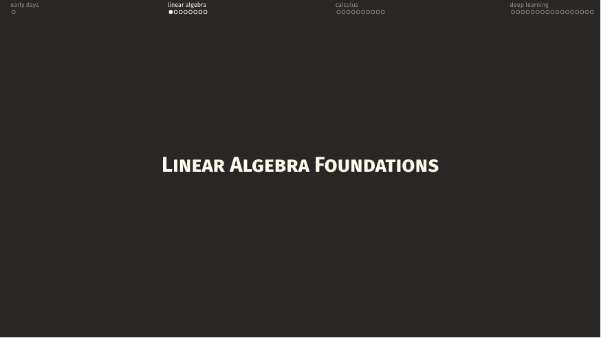
page 03 · section divider
A section divider. Everything from here to page 10 is linear algebra.
Page 04 / 82
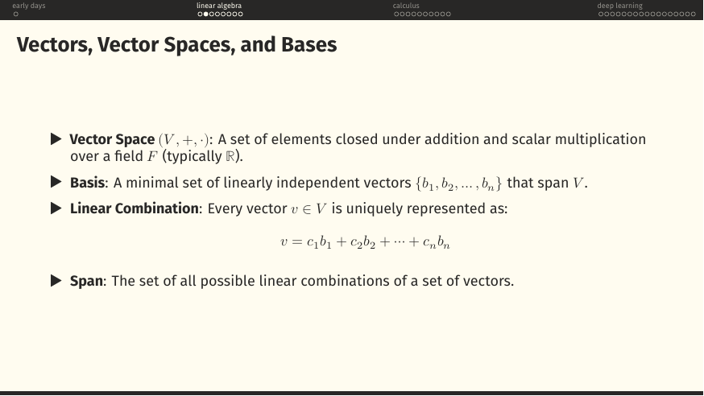
page 04 · vectors, spaces, bases
On the slide
Four definitions stacked on top of each other: vector space, basis, linear combination, and span.
What it means
Forget the axioms for a second. A vector space is any collection of things you can add
together and scale by numbers without leaving the collection. Arrows in the
plane qualify. Polynomials of degree at most 5 qualify. So do functions from ℝ to ℝ. A basis is a smallest set of these things such that every other one is a unique recipe
of "add this much of the first, then this much of the second". The recipe itself is called the linear
combination; the set of all possible recipes is the span.
✦ the aha
The whole reason we get to talk about "coordinates", , is that a basis exists. The numbers are the recipe. Change the basis, change the recipe, but
not the underlying arrow.
Page 05 / 82
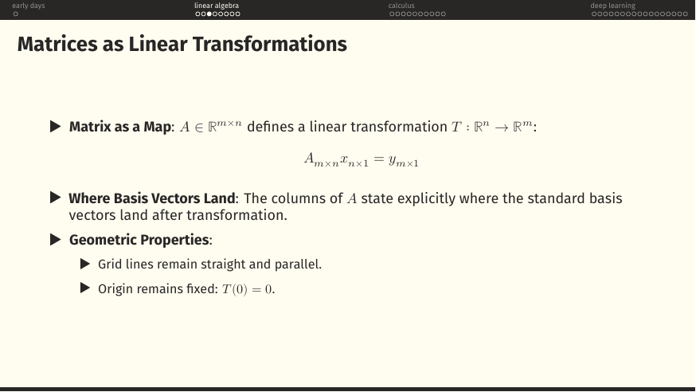
page 05 · matrices as maps
On the slide
A matrix of shape is not a number-grid, it is a linear transformation, a function that eats an
-vector and hands you back an -vector.
What it means
The most useful thing to know about any matrix is this: its columns tell you where the standard
basis vectors go. Column 1 is where lands after the transformation, column 2 where lands, and so on. Everything else, matrix-vector product, matrix-matrix product, determinant,
falls out of this one fact.
Two consequences of linearity worth internalising: grid lines stay straight and parallel after the
transformation, and the origin never moves. If either fails, you are not looking at a linear map.
◉ mental model
When you see , read it as "y is a linear combination of A's columns, weighted by the entries of x." Every
matrix product you meet for the rest of the course is a version of this sentence.
Page 06 / 82
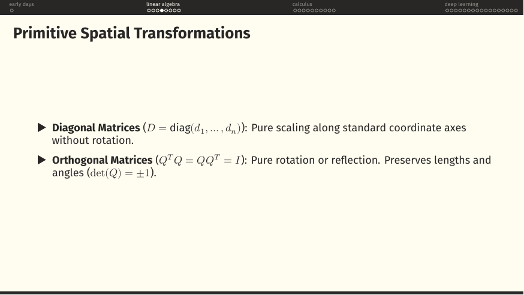
page 06 · diagonal & orthogonal
On the slide
Two families of "clean" matrices: diagonal matrices, which stretch each axis
independently, and orthogonal matrices, which rotate or reflect but preserve every
length and every angle.
What it means
These are the atoms out of which every other linear transformation is built. The Singular Value
Decomposition, which will haunt us later, says that any matrix, no matter how ugly,
factors into rotate, then scale along the axes, then rotate again. That is
. When we hit low-rank matrices in two pages, this is why the picture is so clean.
✦ the aha
is not a formula, it is a geometric fact: orthogonal matrices preserve volume. Positive
determinant means a pure rotation, negative means there is a reflection in there too.
Page 07 / 82
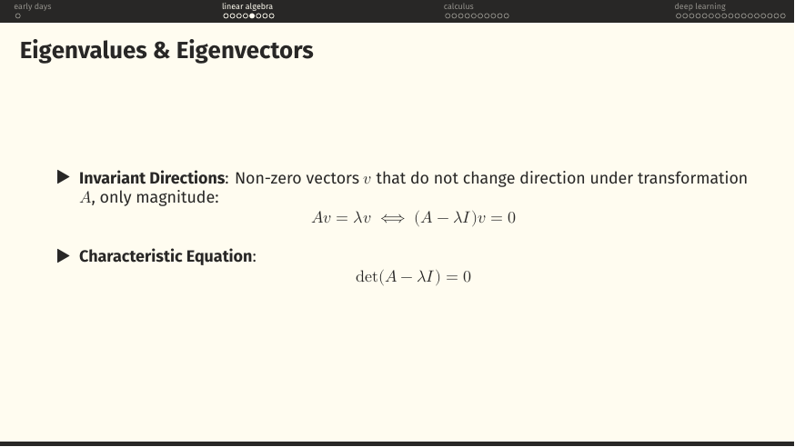
page 07 · invariant directions
On the slide
An eigenvector is a non-zero vector that the matrix does not rotate, it only stretches or shrinks. The stretch factor is the eigenvalue.
What it means
Most vectors, when you multiply them by a matrix, get pushed off in some new direction. Eigenvectors are
the exception: they lie along axes the transformation "believes in", and along those axes it behaves like
plain multiplication. Finding them reduces to solving a polynomial, the characteristic
equation.
→ where this goes
Eigenvectors of symmetric matrices are orthogonal, and their eigenvalues are the squared singular
values of the SVD. So every time later slides say "singular values", they mean "square roots of the
eigenvalues of ." Keep this in your back pocket for page 40.
Page 08 / 82
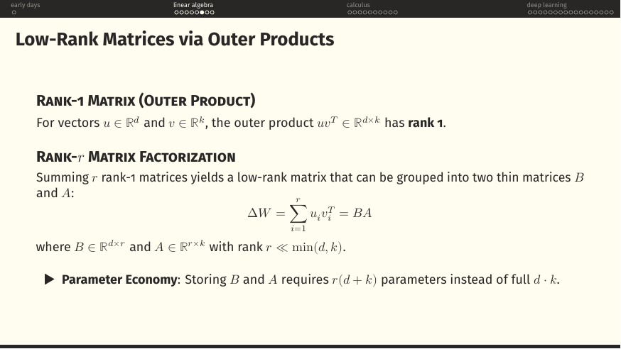
page 08 · outer products & rank
On the slide
Take two vectors and . Their outer product is a matrix, but a very poor matrix, in the sense that every column is a scalar multiple
of . It has rank 1. Sum of these and you get a matrix of rank at most .
What it means
A dense matrix stores numbers. If we know in advance that the matrix has rank , we can factor it as with tall-and-thin and short-and-wide, and pay only numbers. When , that is a huge saving. This is the entire reason low-rank adaptation exists.
Page 09 / 82
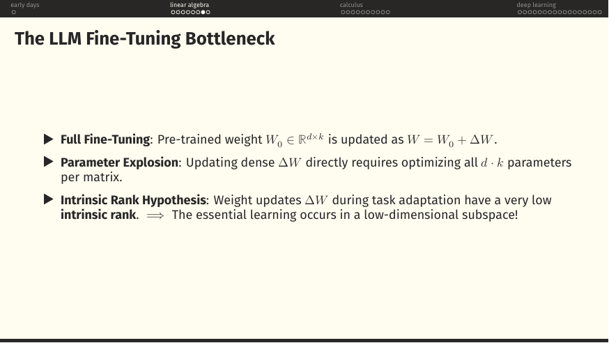
page 09 · the bottleneck
Page 10 / 82
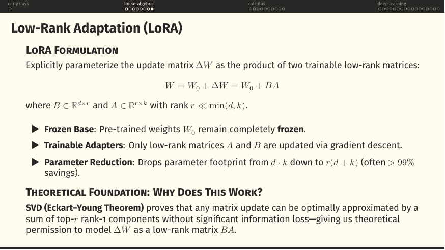
page 10 · LoRA
On these slides
The problem: a modern language model's weight matrix is huge, think , and updating it directly means training sixteen million parameters per matrix, per task. The intrinsic rank hypothesis observes empirically that the update a task needs is nowhere near that rich. It lives in a much smaller subspace.
The idea behind LoRA
Freeze . Parameterise the update as with rank (typically 4, 8, or 16). Train only and . Parameter count drops from to , which is more than 99% savings for realistic sizes. The theoretical cover is the Eckart-Young theorem: for any matrix, the best rank- approximation is given by keeping the top singular components of its SVD. So if the true update was low-rank all along, we lose essentially
nothing.
✦ the aha
Every fact about linear algebra you have accumulated across pages 4-8 is deployed on this one page.
Vectors and their outer products (page 8) give you the rank-1 pieces; SVD (page 6, one line about
"rotate-scale-rotate") tells you those pieces are optimal; the intrinsic-rank observation says nature is
being generous. LoRA is not clever, it is just reading linear algebra correctly.
§3Calculus: from derivatives to Muon
Thirty-three pages, and every one of them earns its space. The move
is escalation: scalar functions of one variable (page 12), then many
variables (17), then vector-valued functions (25), then second
derivatives that live in a matrix (29). Once we have the machinery
we spend the rest of the section using it, first to walk downhill
(gradient descent), then to walk downhill more cleverly
(Newton-Raphson), then to hint at a very modern optimizer that uses
the SVD trick from §2. If you only take one section of this tutorial
seriously, take this one.
Page 11 / 82
page 11 · section divider
The second big sweep of the tutorial opens.
Page 12 / 82
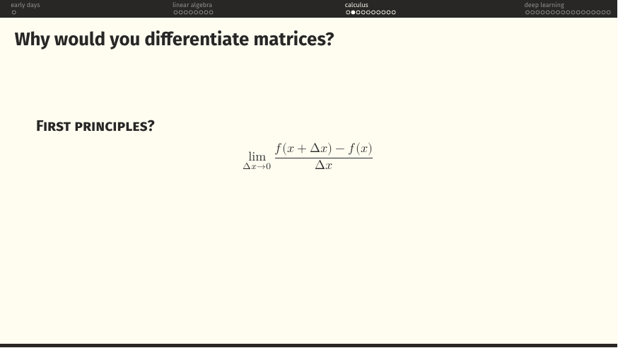
page 12 · first principles
Page 13 / 82
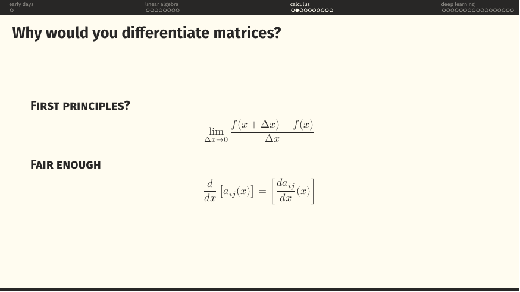
page 13 · differentiate entrywise
On these slides
A gentle onboarding to the section's central question, how do we differentiate a matrix? Page 12
reminds you what a derivative is at all: the limit of a rise-over-run as the run goes to zero. Page 13 gives
the honest, boring answer to the matrix question: if a matrix's entries are all scalar functions , then its derivative is just the matrix whose entries are the individual derivatives .
Why start here
The rest of the tutorial is going to bend the definition of "derivative" in progressively weirder
directions, with respect to a vector, then with respect to a matrix, then with respect to a whole neural
network's parameter tensor . If the very first move (differentiating a matrix of scalar functions elementwise) doesn't sit
comfortably, the later moves won't either.
"Why are there so many variables?": partial derivatives
Page 14 / 82
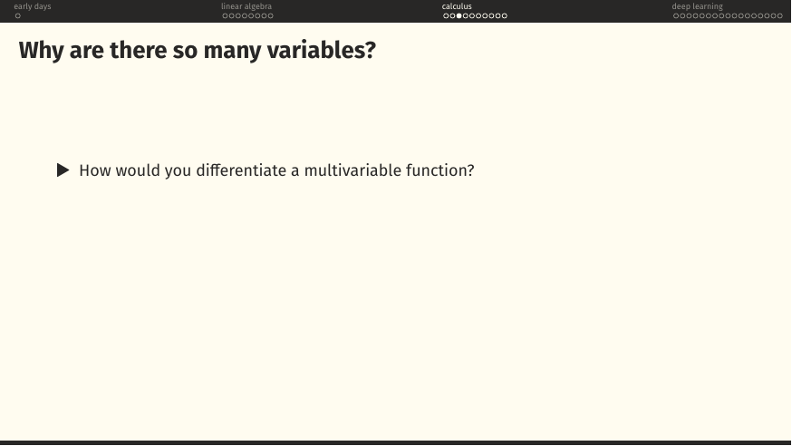
page 14 · the question
Page 15 / 82
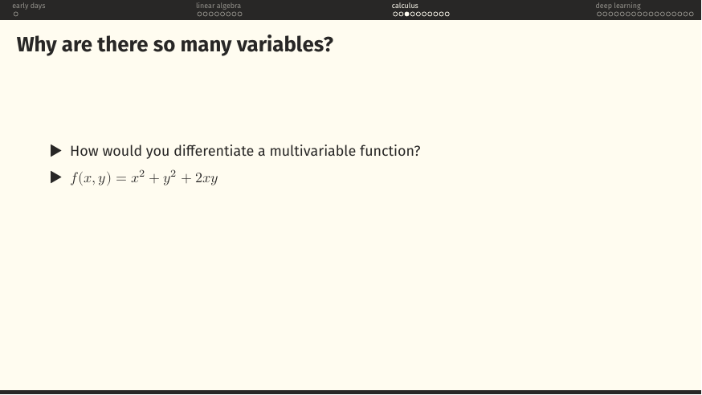
page 15 · the example
Page 16 / 82
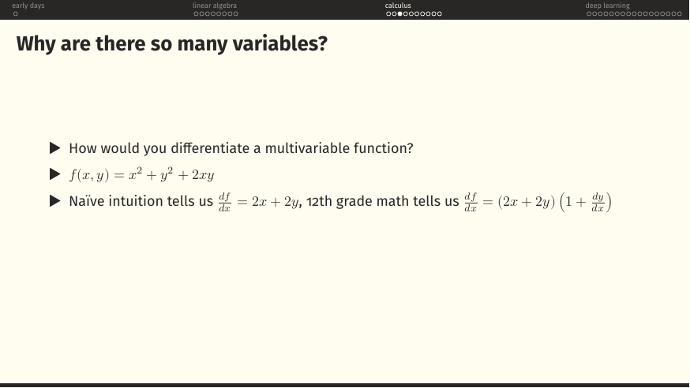
page 16 · the paradox
Page 17 / 82
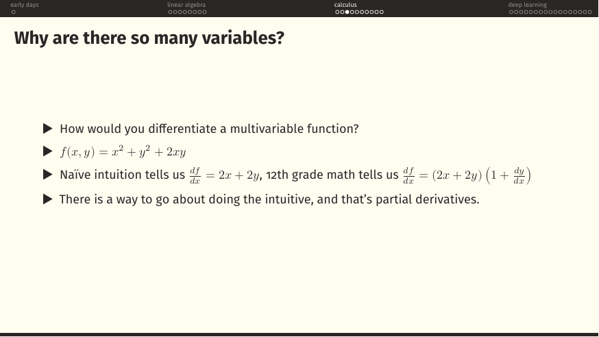
page 17 · the resolution
Page 18 / 82
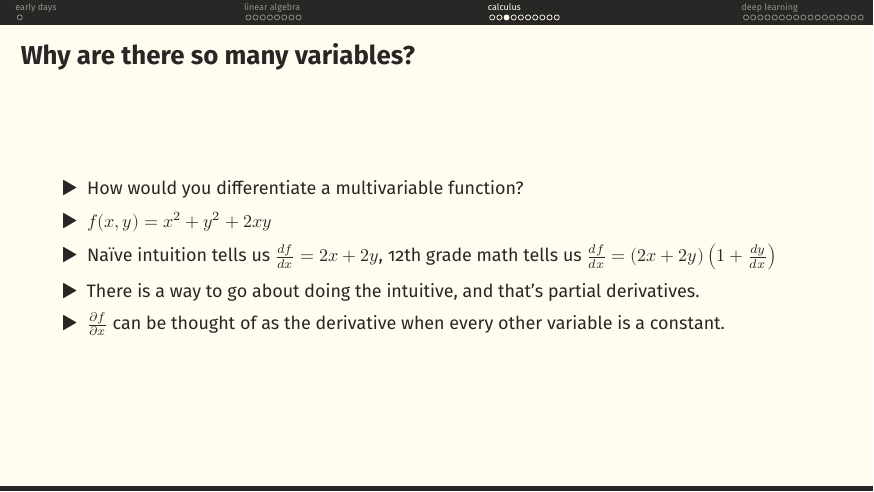
page 18 · the definition
What this build shows
The five slides pose the same puzzle and then pull the rabbit out. If , is equal to , or does it need a correction? The two 12th-grade instincts disagree.
What it means
They disagree because is an underspecified question when there are two independent variables. The fix is the partial derivative : differentiate with respect to while pretending every other variable is a constant. For our , that gives . Cleanly.
◉ mental model
Picture as a hilly landscape over the plane. is the slope you would feel if you took a step in the pure direction. is the slope in the pure direction. Each partial ignores the other axis on purpose.
"Dear Lord, it's Physics!": the gradient
Page 19 / 82
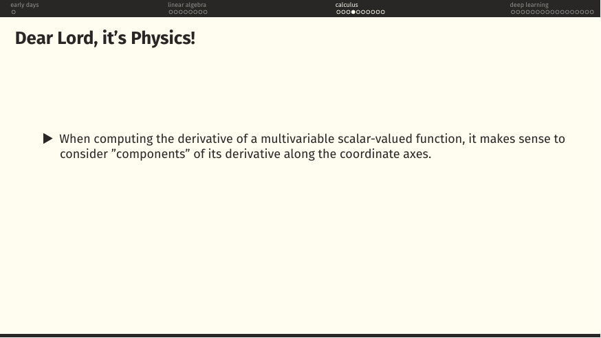
page 19 · components
Page 20 / 82
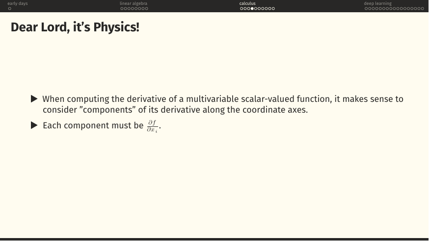
page 20 · the components are partials
Page 21 / 82
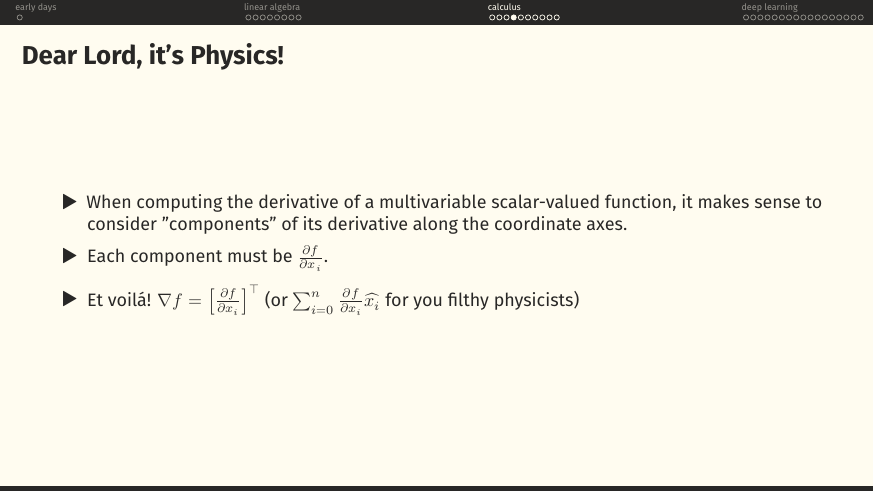
page 21 · the gradient
What this build shows
Package all the partial derivatives of a scalar-valued into a single object. The result is a vector.
What it means
That vector is the gradient . It has one entry per input coordinate, and each entry is the partial derivative along that
coordinate. Geometrically it points uphill in the steepest direction, and its length is
the steepness of that steepest ascent.
✦ the aha
The title's joke is real. Physicists write the same object as , using unit-vector notation. Mathematicians stack the components in a column and call it a day.
Same beast either way.
"Corn on the Jacob": the Jacobian
Page 22 / 82
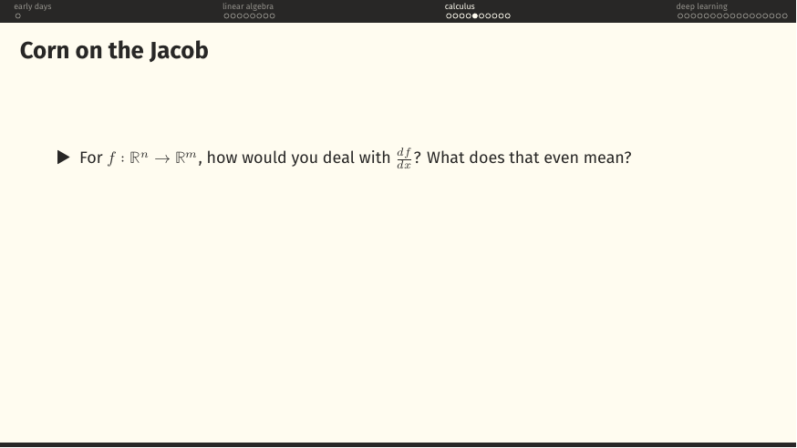
page 22 · the question
Page 23 / 82
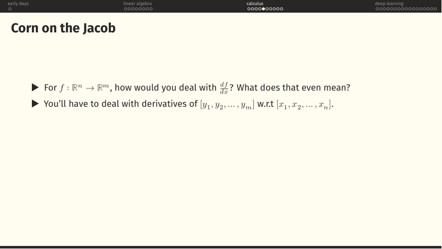
page 23 · every-with-every
Page 24 / 82
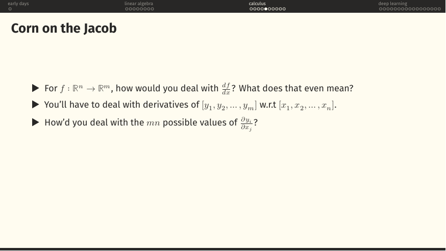
page 24 · mn possibilities
Page 25 / 82
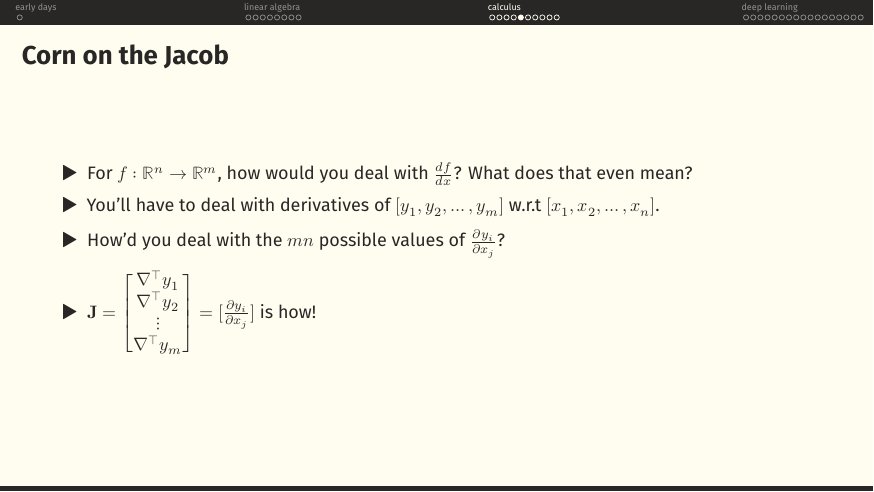
page 25 · the Jacobian
What this build shows
The gradient handled a scalar output. What if the output is itself a vector? Then a single "derivative" is
not enough, you need one number for every combination of output and input coordinate. That
is numbers.
What it means
Stack them in a matrix. The Jacobian has one row per output coordinate, that row is the gradient (transposed) of that output. It has one
column per input coordinate. Entry is . If you feed the Jacobian a small displacement , it hands you back the best linear estimate of the resulting . The Jacobian is the derivative, generalised.
◉ dimensions cheat sheet
Given : the Jacobian is . If (scalar output), collapses to . If (scalar input), it collapses to the ordinary derivative vector. Every subsequent Jacobian in this
course will fall into one of these two shapes.
"We've had one breakfast, yes…": the Hessian
Page 26 / 82
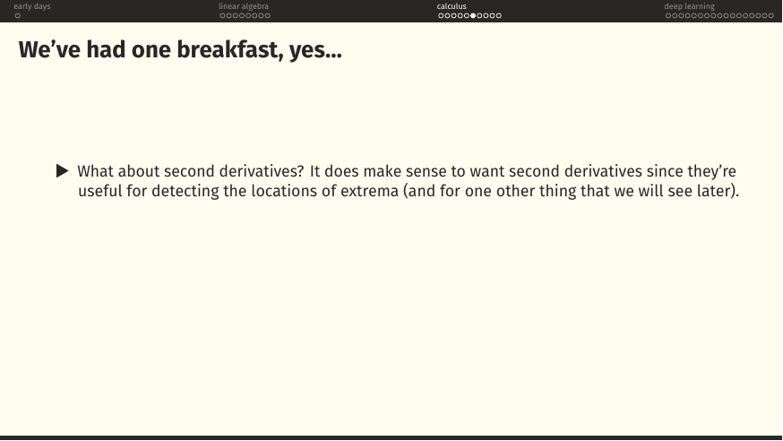
page 26 · second breakfast
Page 27 / 82
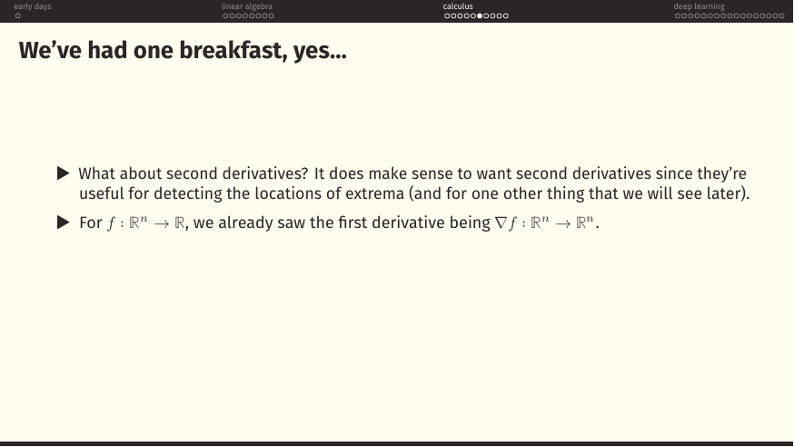
page 27 · gradient is vector-valued
Page 28 / 82
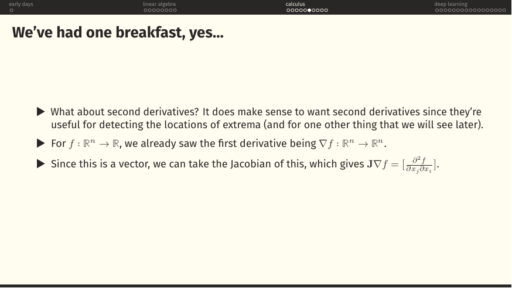
page 28 · Jacobian of the gradient
Page 29 / 82
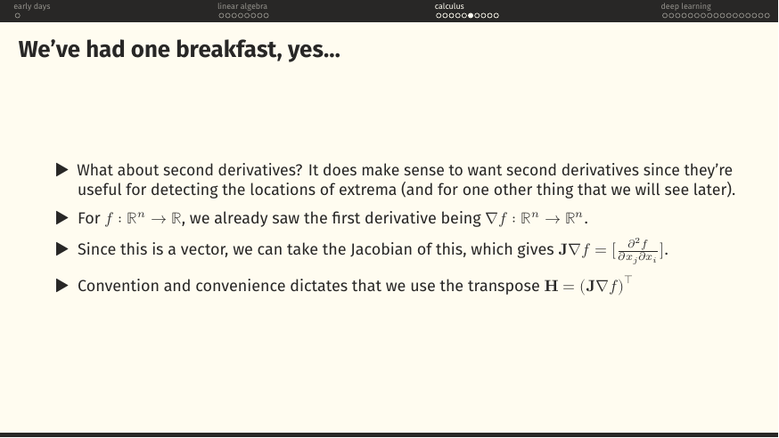
page 29 · the Hessian
What this build shows
Second derivatives. For a scalar-valued , the first derivative is a vector (the gradient); the derivative of that vector is a matrix, the Hessian . Entry is , the sensitivity of the -th partial to a wiggle in the -th input.
What it means
Second derivatives tell you about curvature. In 1D, positive means the graph is cupping upward, you are near a minimum, not a maximum. In many variables the same
information lives in the eigenvalues of : all-positive means a local min, all-negative means a local max, mixed signs means a saddle. Second
derivatives are also the "one other thing" hinted at, they will show up in Newton-Raphson two pages later.
✦ the aha
The convention is not arbitrary. Because mixed partials commute for nice functions (Clairaut / Schwarz), is symmetric, a fact that will save your life every time you want to invert one.
Page 30 / 82
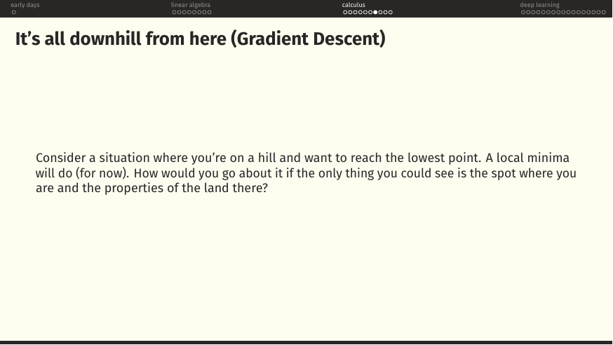
page 30 · the hill
On the slide
The core parable of optimisation. You are somewhere on a landscape, blindfolded except for a small patch
of ground around your feet. Your job is to get to the lowest point you can. What do you do?
What it means
Feel the slope, take a step downhill, repeat. This is gradient descent. Formally,
if the landscape's height is , the direction of fastest ascent is , so the direction of fastest descent is . Step size is a hyperparameter you get to pick.
⚠ common trap
The phrase "a local minimum will do (for now)" is doing enormous work. Gradient descent finds
a minimum, not the minimum. The whole reason deep-learning practitioners obsess over
initialisation, learning-rate schedules, and momentum is that the local minimum you land in depends on
where you started and how you walked.
Newton-Raphson: walking downhill using curvature
Page 31 / 82
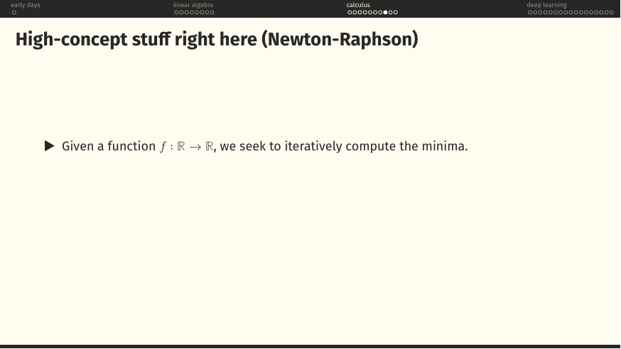
page 31 · the problem
Page 32 / 82
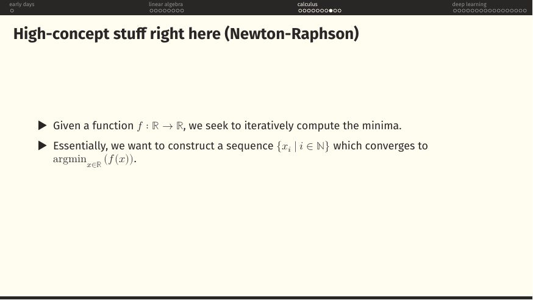
page 32 · a sequence
Page 33 / 82
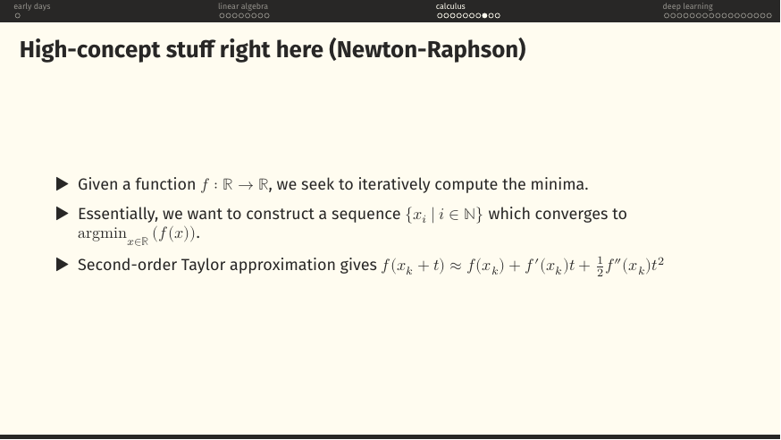
page 33 · Taylor around x_k
Page 34 / 82
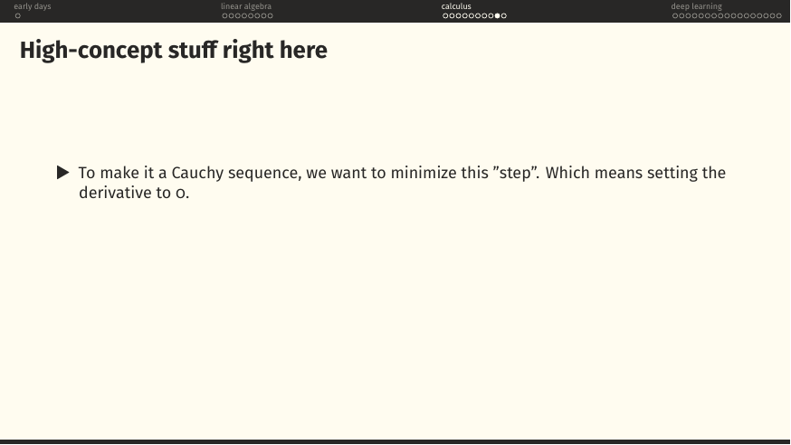
page 34 · set derivative to zero
Page 35 / 82
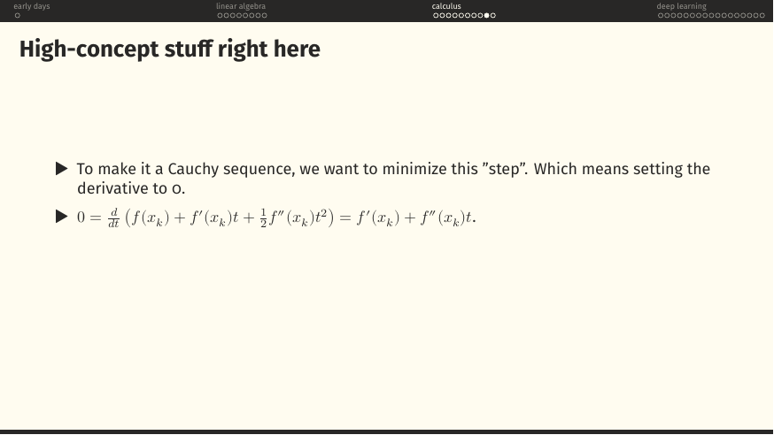
page 35 · solve for t
Page 36 / 82
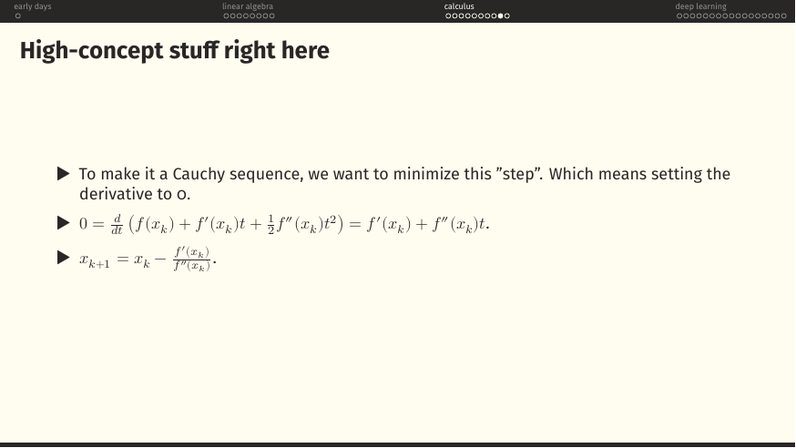
page 36 · the update
Page 37 / 82
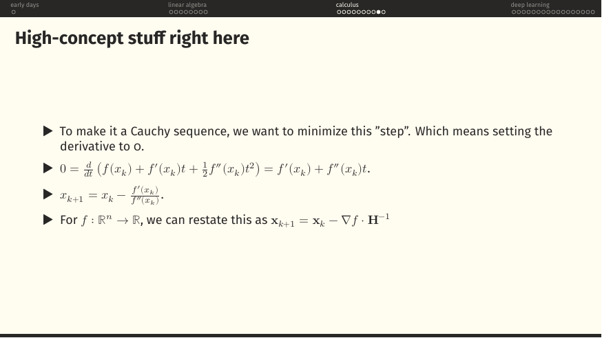
page 37 · multivariate Newton
What this whole build shows
A more principled hill-descent than gradient descent. Instead of just following the slope, we build a
quadratic model of the landscape at our current point, using the value, the slope, and
the curvature, and jump directly to that model's minimum. Iterate.
What it means
Second-order Taylor says . Minimise the right-hand side in : differentiate, set to zero, solve. You get the Newton-Raphson step .
In many variables the same story becomes , you pre-multiply the gradient by the inverse of the Hessian.
⚠ why nobody uses this at scale
The multivariate update needs . For a modern network with parameters, the Hessian is . Storing it is a nonstarter; inverting it is science fiction. This is exactly why the next few
pages are about first-order tricks that approximate curvature without ever writing down.
"If at first you don't succeed…": a preview of Muon
Page 38 / 82
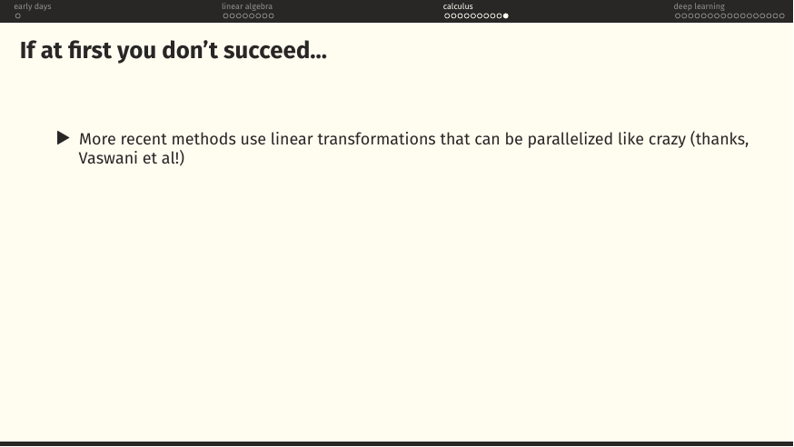
page 38 · parallelisable
Page 39 / 82
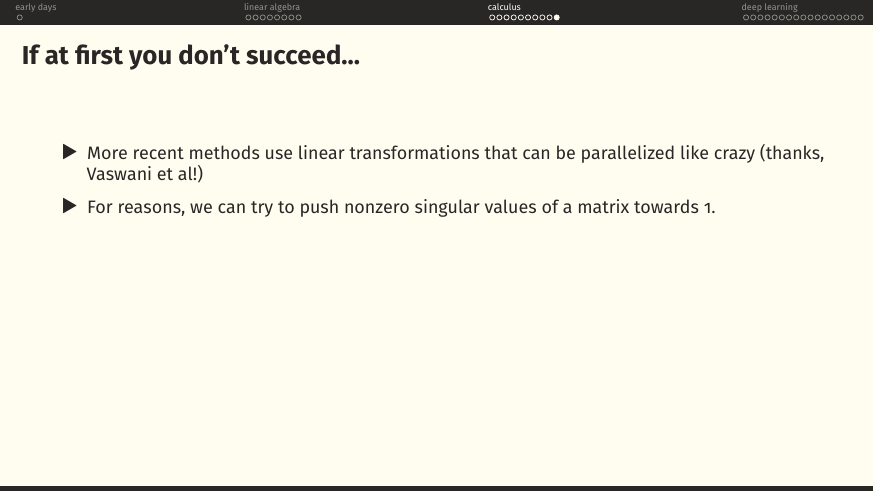
page 39 · nudge singular values → 1
Page 40 / 82
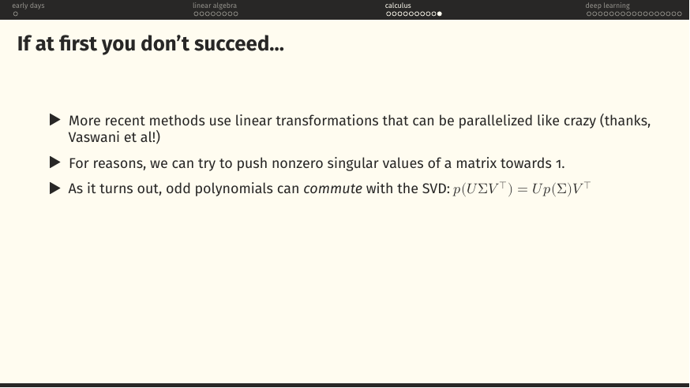
page 40 · SVD-commuting
Page 41 / 82
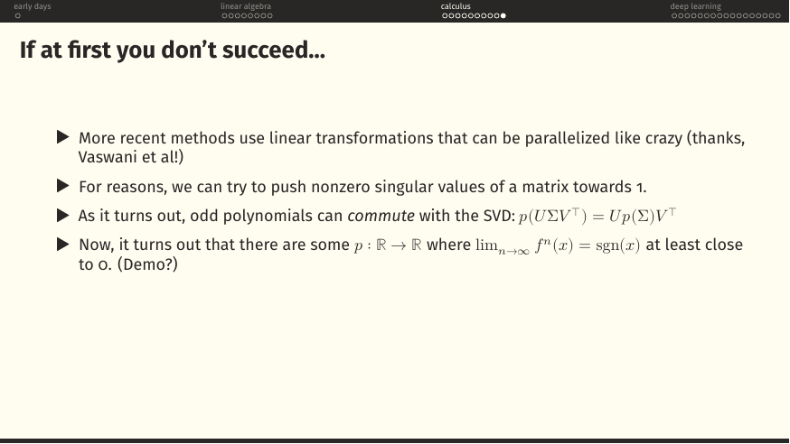
page 41 · p^n(x) → sgn(x)
Page 42 / 82
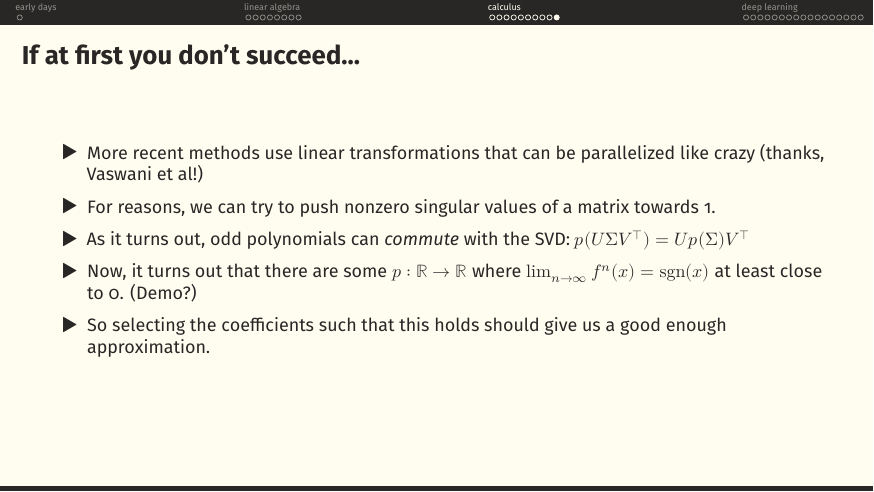
page 42 · pick coefficients
Page 43 / 82
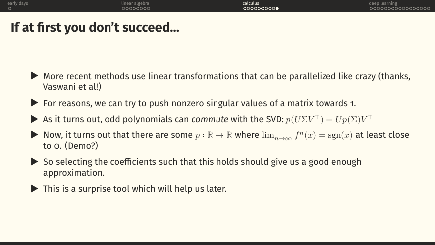
page 43 · a surprise tool
What this build shows
A six-slide teaser for something that will land, in full, at the end of §4. The story: modern optimisers
need updates that are matrices, and those updates would be more well-behaved if the matrix had all
singular values equal to 1, that is, if it were pushed toward an orthogonal matrix (recall
page 6). How do you do that on a GPU without ever calling the SVD?
The trick
Odd polynomials, think , have a magical property: . Applying the polynomial to the whole matrix is the same as applying it to each singular value in
isolation. So if we can find a polynomial such that iterating on any real number in converges to 1, then iterating on any matrix will drive all its singular values to 1, without ever computing the SVD
explicitly. Only matrix multiplies, which GPUs adore.
→ payoff at page 75
This is called Newton-Schulz iteration, and it is the beating heart of the
Muon optimizer, which shows up at the very end of the deep-learning section. When you get
there, remember these six pages, they are the whole reason Muon works at all.
§4Deep learning: assembling the machine
Thirty-nine pages, and the payoff for everything before. Deep learning
is now defined in one sentence: pick a parametrised function and tune
the parameters until it does what you want. The section justifies why
such a function even exists (Universal Approximation), gives it teeth
(classification, softmax), and then explains how to actually find the
parameters using every tool from §3 (loss functions, chain rule,
backprop, SGD, Adam, and finally Muon). By the last page you have
built a language model from first principles.
Page 44 / 82
page 44 · section divider
The final and longest sweep.
"Nearly there": deep learning in one sentence
Page 45 / 82
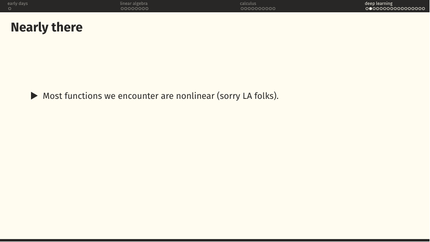
page 45 · reality is nonlinear
Page 46 / 82
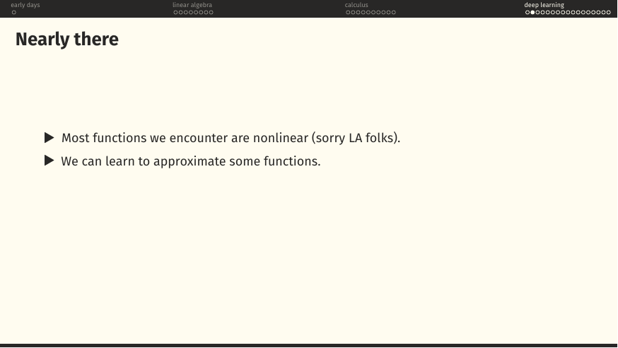
page 46 · approximate them
Page 47 / 82
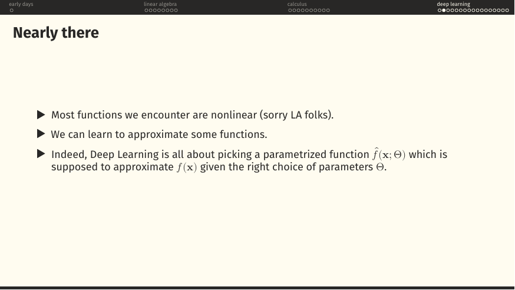
page 47 · the definition
Page 48 / 82
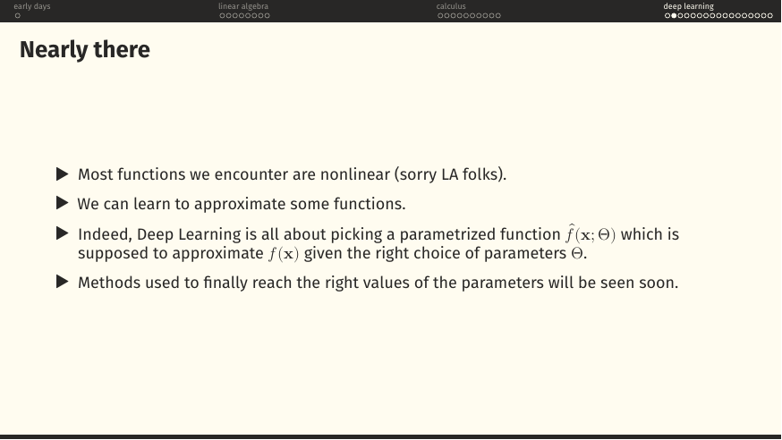
page 48 · finding Θ, later
What this build shows
The definition of deep learning, unpacked slowly. The world is full of functions we care about, from images
to labels, from English to French, from prompt to next token, and most of them are not linear. So we pick a
family of parametrised functions , flexible enough to plausibly contain a good approximation of the target , and we search over for the setting that best fits the data.
◉ what Θ actually is
is every tunable number in the network, all the weight matrices , all the bias vectors , all the layer-norm scale factors, all the embedding entries. For a 7B model that is seven billion
numbers. Section §3 is going to earn its rent here.
Classification: slicing space with hyperplanes
Page 49 / 82
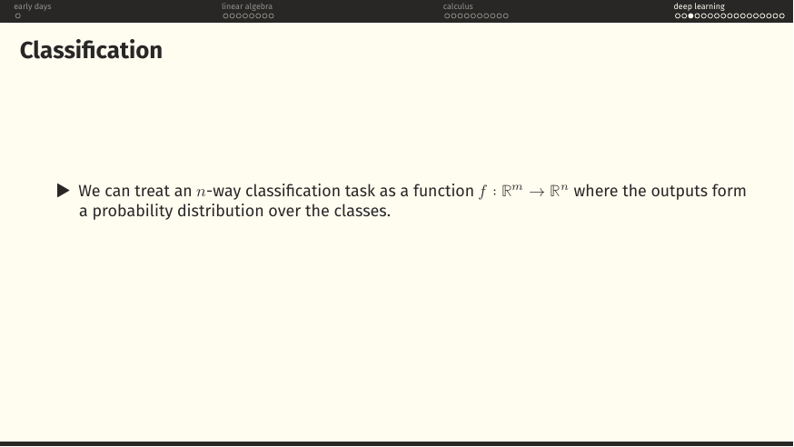
page 49 · classification as a function
The first concrete instance of the parametrised-function view: classification.
Input an -dimensional feature vector, output an -dimensional vector of class probabilities. Whichever entry is largest, that is the model's
prediction.
Page 50 / 82
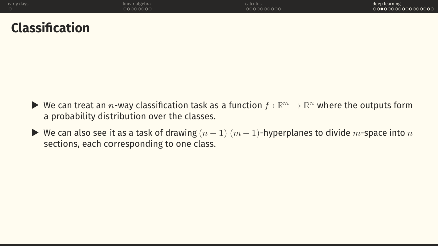
page 50 · hyperplanes as decision surfaces
Page 51 / 82
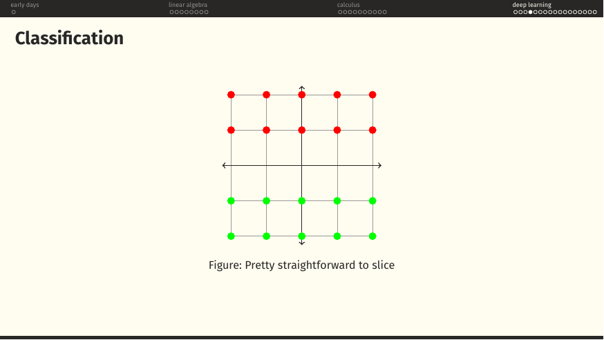
page 51 · easy case
Page 52 / 82
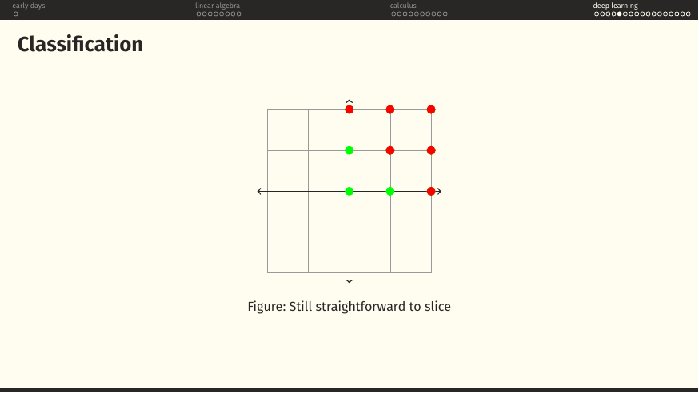
page 52 · still easy
Page 53 / 82
page 53 · XOR: oh no
What this build shows
The geometry of classification. Splitting an -dimensional input space into class regions is the same as drawing hyperplanes (lines in 2D, planes in 3D, etc). For "nice" data, the first two grids, one straight
line does it. Then comes XOR: red at NE and SW, green at NW and SE. No single straight line separates them.
✦ the aha
This "oh no" moment is exactly why the field spent a decade after 1969 in the neural-net winter. Minsky
and Papert showed that a single-layer perceptron cannot solve XOR. The fix, hinted at on the very next
pages, is composition with a nonlinearity: bend the input space before you try to cut it,
and the problem becomes linearly separable in the bent space.
"Ain't linear no mo": why we need nonlinearities
Page 54 / 82
page 54 · composing affine maps
Page 55 / 82
page 55 · still affine
Page 56 / 82
page 56 · add σ, get real
What this build shows
Why simply stacking linear layers is useless, and what fixes it. Composing two affine maps collapses algebraically to a single affine map . A hundred layers deep, still one affine map. XOR still unsolvable.
The fix: sandwich a pointwise nonlinearity between the layers. Now the composition is a genuinely new function that cannot be flattened. This is why every deep network, from a 1990s
MLP to a 2026 transformer, has ReLU, GELU, SiLU, or some other pointwise squish between its linear layers.
Page 57 / 82
0, there exist A_1, A_2, b such that sup_{x∈K} ‖f(x) − A_2 σ(A_1 x + b)‖ < ε.">
page 57 · Universal Approximation
On the slide
The Universal Approximation Theorem, stated formally. In plain English: given
any continuous function on a bounded region, and any tolerance you like, there exists a
two-layer network, one linear layer, one nonlinearity, one more linear layer, that agrees with your target
function everywhere in the region to within that tolerance.
◉ what the theorem does and does not promise
Does promise: such a network exists. Does not promise: you can find
its weights with gradient descent, or that the required width is small, or that the network generalises to unseen data. UAT is an existence result, not a
training guarantee.
Page 58 / 82
page 58 · UAT, abridged
Page 59 / 82
page 59 · uhhhh here's a unicorn
What these two show
The abridged theorem strips off the epsilons and just says: any continuous function can be approximated
by a two-layer network as closely as you like. The next slide, mock-titled "proof", presents a
unicorn.
✦ the aha (the joke)
The joke is that the actual proof (Cybenko 1989, Hornik 1991) is a densely functional-analytic argument
involving the Hahn-Banach theorem and the Riesz representation theorem. Nobody wants to reproduce that on
a tutorial slide. The unicorn stands in for a proof exactly the way "left as an exercise for the reader"
does in textbooks, with the added candour of admitting that it exists more in the imagination than in your
notebook right now.
"Begging the question 101": the loss
Page 60 / 82
page 60 · but who picks Θ?
Universal approximation guarantees the right exists. It says nothing about how to find it. That is the question the rest of the section
answers.
Page 61 / 82
page 61 · we need a metric
Page 62 / 82
page 62 · cross-entropy loss
What this build shows
Define a loss function that measures how wrong the model is. The cross-entropy loss, the standard for
classification and language modelling:
where is 1 for the correct class and 0 otherwise, and is the model's predicted probability for class . When the model is confident and right, is close to 0 and the loss is small. When it is confident and wrong, heads to and the loss explodes. That asymmetry, being punished more for being confidently wrong than for
being timidly wrong, is the whole point.
→ where this goes
Training the model = choosing to minimise . That is a many-variable minimisation problem. §3 has already taught you how to attack it,
gradient descent needs . The next five pages compute that gradient.
Chain rule: the same slides twice, once for chain rule and once for backprop
Page 63 / 82
page 63 · the setup
Page 64 / 82
page 64 · one perceptron, one weight
Page 65 / 82
page 65 · same idea for x, b
Page 66 / 82
page 66 · deeper networks
Page 67 / 82
page 67 · and over widths
What this build shows
How the chain rule, learned in high school, is enough to compute the gradient of
the loss with respect to every parameter in a network, no matter how deep, no matter how wide.
What it means
For a single-perceptron model , the loss depends on through a chain of three steps: enters the pre-activation , which passes through the nonlinearity to produce , which enters . Multiply the three local derivatives together. Same argument works for and . And for deeper networks: the you just computed is exactly the "loss gradient" the previous layer needs, plug it in as the
starting point of a fresh chain-rule expansion.
◉ why "chain rule" and "backprop" are the same slides
Because they are the same idea, phrased twice. Chain rule tells you the mathematical fact; backprop
tells you how to compute it efficiently, right-to-left, layer by layer, reusing the downstream
gradient as you go. The next five slides restate the same content under the label "Backpropagation" to
hammer this home.
Backpropagation: the same idea, with a computer in mind
Page 68 / 82
page 68 · restatement
Page 69 / 82
page 69 · one perceptron
Page 70 / 82
page 70 · same for x, b
Page 71 / 82
page 71 · deeper
Page 72 / 82
page 72 · and wider
On the slide
The exact same five slides, one word swapped: "chain rule" → "backpropagation". The deliberate repetition
is the pedagogy.
What it means
Backpropagation is what you get when you commit to computing the chain-rule
gradients in a specific order: start at the loss (the top of the network), compute , and walk backwards through the layers, at each step turning "gradient with respect to this
layer's output" into "gradient with respect to this layer's parameters" and "gradient with respect to this
layer's input". The second output becomes the first input for the layer below.
✦ the aha
Nothing is happening here that wasn't already in the chain rule. What backprop adds is dynamic
programming: instead of re-deriving the gradient from scratch for every parameter, you
compute the shared intermediate quantities once and reuse them. On a modern network with a billion
parameters, this is the difference between minutes and centuries.
Optimisers: from SGD to Muon
Page 73 / 82
page 73 · SGD
Page 74 / 82
page 74 · momentum, Adam, AdamW
What this build shows
Everything from §3 crystallises into one line:
Note the subscript: the gradient is with respect to , not . Data is fixed; parameters are what we tune. The "S" in SGD is stochastic, we
approximate the full gradient by averaging over a random mini-batch of examples at each step, which is
faster and, surprisingly, often finds better minima than the exact full-batch version.
Why the family grew
Plain SGD is fine but sensitive to the learning rate and slow in valleys where the loss curves gently along
one direction and steeply along another. Momentum adds inertia so you barrel through
shallow directions. Adam and AdamW track per-parameter
statistics of the gradient's mean and variance and adapt the step size accordingly, think of it as
approximating the diagonal of the Hessian on the cheap. All of them are trying to buy Newton-Raphson-style
curvature information without paying the Newton-Raphson-style price.
Page 75 / 82
page 75 · Newton-Schulz returns
Page 76 / 82
page 76 · the Muon algorithm
What this build shows
The payoff for the six-page teaser on pages 38-43. The Muon optimizer, in five lines:
- Compute the usual gradient .
- Maintain a momentum buffer .
- Run a Newton-Schulz iteration on to orthogonalise it, pushing all its singular values to 1.
- Take the resulting matrix as the actual update direction.
- Update .
✦ the aha
Muon literally uses the fact from §2 that any matrix factors as , plus the fact from §3 that odd polynomials commute with this factorisation, to produce an update
that is closer to an orthogonal matrix than plain-gradient methods would give. Every idea in this
five-line algorithm was introduced earlier in the tutorial. That is the whole point of ordering the
material this way.
"Pulling up to the function, the function is English"
Page 77 / 82
page 77 · language as a function
Page 78 / 82
page 78 · but Euclidean, though?
What this build shows
The moment the tutorial finally says the word "language". Everything we have built, parametrised functions,
cross-entropy loss, gradient descent, is deployed on the problem of predicting the next token given a
prompt. That prediction problem, chained one token at a time, is autoregressive language
modelling. Every LLM you have used is this.
Page 78 raises the obvious objection: our machinery approximates functions on . Words are discrete. What gives?
"Sike! It's maths all the way down"
Page 79 / 82
page 79 · embeddings, discretised, weak
Page 80 / 82
page 80 · probability vector over V
Page 81 / 82
page 81 · softmax
What this build shows
The resolution to page 78's objection. Instead of the network outputting a discrete token (which breaks
differentiability), we have it output a -dimensional vector, one number per token in the vocabulary, that we interpret as a
probability distribution over what comes next. Sample from it, or just take the arg-max, whenever you
actually need a token.
Enforcing the "probability" part
The output vector has to have non-negative entries that sum to 1. The softmax
function is the standard way to enforce both:
Exponentiate everything to force positivity; divide by the total to force normalisation. Combined with
cross-entropy loss (page 62), this is the entire output stage of essentially every language model built in
the last decade.
→ where this goes
The very first thing the next tutorial (Matrices
→ Transformers) does is build the middle layers, attention, MLP blocks, layer norm, that sit
between the input embedding and the softmax we just introduced. If this page makes sense, you have all
the pre-requisite machinery to follow that next tutorial without pausing.
Page 82 / 82
page 82 · fin
Fin. Eighty-two pages, four sections, one loop closed. You started with the definition
of a vector space; you ended with the softmax layer of a language model. Every idea in between was in
service of that trip, and every idea in the rest of the course either uses or extends what this tutorial
set up.